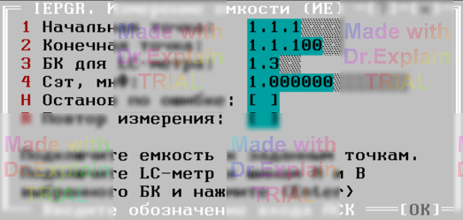

4.13 IEPGR. Измерение емкости (ИЕ)
Предоставляется меню:

Опции «Начальная точка» и «Конечная точка» задают входы АСК для подключения эталонной емкости. Опция «Cэт, мкФ» задает величину эталонной емкости.
После ввода параметров меню автоматически выполняются следующие действия:
- Начальная заданная точка подключается к шине A1.
- Конечная заданная точка подключается к шине B1.
-
Производится измерение. В протокол выводятся сообщения вида:
$TST1 Cд.б=1мкФ+-5.00% Cизм=1.0000мкФ Погр=+0.00% $TST1 Измерений:1 Все норма ПОГРmin=0 ПОГРmax=+0.00% - Предоставляется меню, см. п. 6.3.